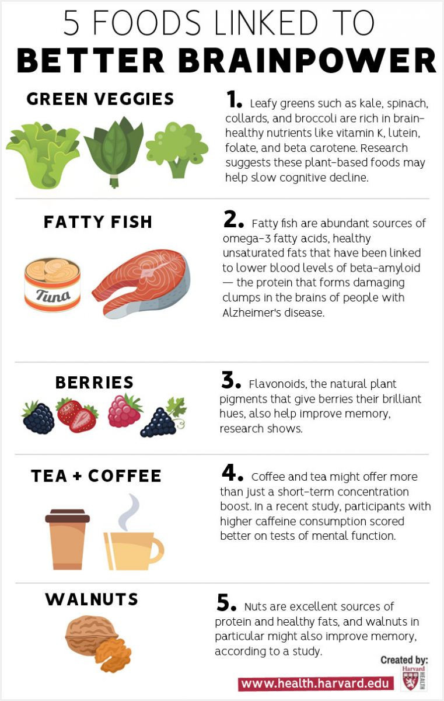

Just as there is no magic pill to prevent cognitive decline, no single almighty brain food can ensure a sharp brain as you age. Nutritionists emphasize that the most important strategy is to follow a healthy dietary pattern that includes a lot of fruits, vegetables, legumes, and whole grains. Try to get protein from plant sources and fish and choose healthy fats, such as olive oil or canola, rather than saturated fats.
Research shows that the best brain foods are the same ones that protect your heart and blood vessels, including the following:
- Green, leafy vegetables. Leafy greens such as kale, spinach, collards, and broccoli are rich in brain-healthy nutrients like vitamin K, lutein, folate, and beta carotene. Research suggests these plant-based foods may help slow cognitive decline.
- Fatty fish. Fatty fish are abundant sources of omega-3 fatty acids, healthy unsaturated fats that have been linked to lower blood levels of beta-amyloid—the protein that forms damaging clumps in the brains of people with Alzheimer's disease. Try to eat fish at least twice a week, but choose varieties that are low in mercury, such as salmon, cod, canned light tuna, and pollack. If you're not a fan of fish, ask your doctor about taking an omega-3 supplement, or choose terrestrial omega-3 sources such as flaxseeds, avocados, and walnuts.
- Berries. Flavonoids, the natural plant pigments that give berries their brilliant hues, also help improve memory, research shows. A study done by researchers at Harvard's Brigham and Women's Hospital found that women who consumed two or more servings of strawberries and blueberries each week delayed memory decline by up to two-and-a-half years.
- Tea and coffee. The caffeine in your morning cup of coffee or tea might offer more than just a short-term concentration boost. In a 2014 study published in The Journal of Nutrition, participants with higher caffeine consumption scored better on tests of mental function. Caffeine might also help solidify new memories, according to other research. Investigators at Johns Hopkins University asked participants to study a series of images and then take either a placebo or a 200-milligram caffeine tablet. More members of the caffeine group were able to correctly identify the images on the following day.
- Walnuts. Nuts are excellent sources of protein and healthy fats, and one type of nut in particular might also improve memory. A 2015 study from UCLA linked higher walnut consumption to improved cognitive test scores. Walnuts are high in a type of omega-3 fatty acid called alpha-linolenic acid (ALA). Diets rich in ALA and other omega-3 fatty acids have been linked to lower blood pressure and cleaner arteries. That's good for both the heart and brain.
